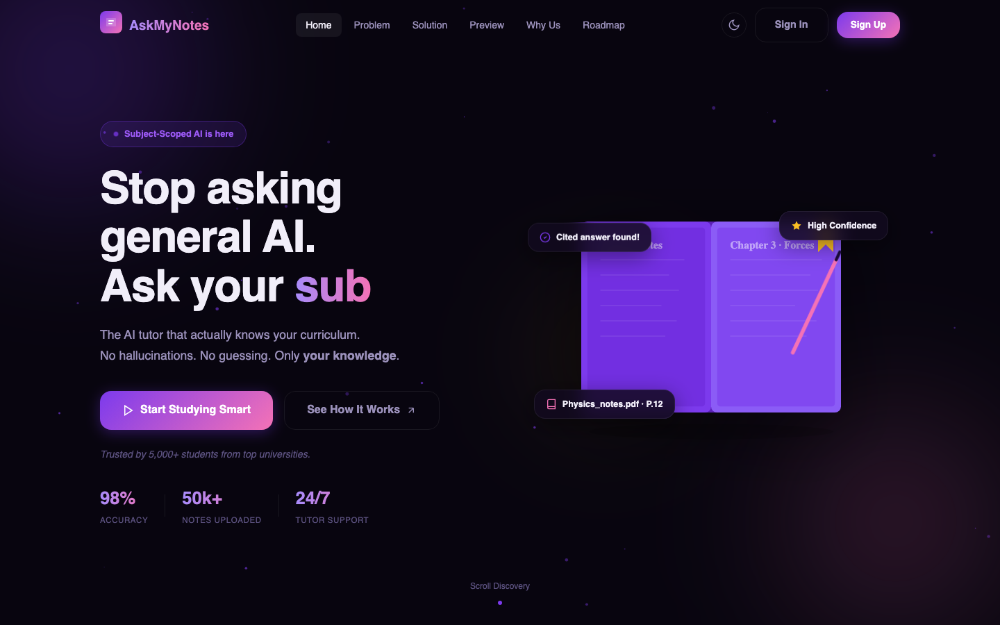
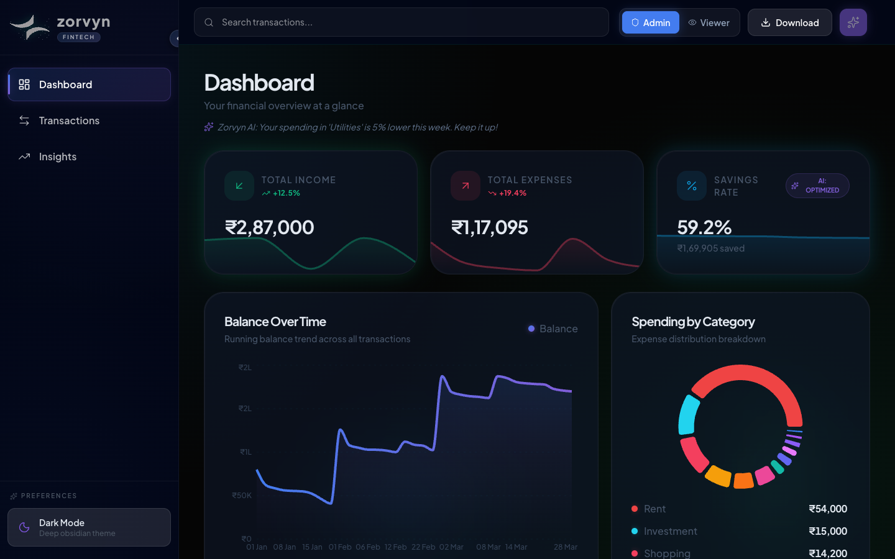

01CampusCritiquemeasured
College discovery platform I co-founded. Verified reviews, real placement data, paid sessions with seniors.
1,100+Unique visitors
Open to internships
CS (AI) at Vedam, Pune
Co-founder of CampusCritique. 3× hackathon wins. 38+ students guided into college. Building and documenting everything in public.
Right now: building CampusCritique Connect, the paid mentorship flow, watching the SIH 2026 national round brief, reading Designing Data-Intensive Applications.
5 projects. A measured mark means the case study has a table of numbers with their sources.
College discovery platform I co-founded. Verified reviews, real placement data, paid sessions with seniors.

Maritime console that detects oil slicks in satellite radar, backtracks drift, and ranks the vessel that caused it.

A subject-scoped tutor that answers only from the notes you upload, with citations to the page.

Four LangGraph agents for Indian farmers, with Hindi and Marathi voice, built in 24 hours.

Personal finance dashboard: income, expenses, savings rate, trends, and an insight line that nudges habits.
Measured evidence behind the hackathons, products, and milestones.
Shipping since June 2025. One learning per entry, newest first.
"Built from questions I once had,
and lessons I’ve learned since."
I started this channel to answer the questions I had before starting college: what to learn, what to avoid, and what actually matters. What began as a way to help juniors gradually became a project of its own.
I manage the entire process alongside college, from researching and scripting to recording, editing, designing thumbnails, and publishing. Balancing it with academics isn’t always easy, but every video teaches me something new about creating, communicating, and building better with each attempt.
Eight questions, answered straight.
Who are you, in one breath?
Second-year B.Tech CS (AI) at Vedam School of Technology, Pune - originally from Delhi. I co-founded CampusCritique, run a YouTube channel that has guided 38+ students into colleges, and build full-stack products in React, Next.js, and Python.
Why students?
I took admission at Vedam only after getting answers to a ton of questions the brochure never covered. Nobody should have to dig that hard. CampusCritique and the channel exist so the next person does not.
What are you good at?
Shipping frontends with the product thinking around them. My stack is React, Next.js, Supabase, Tailwind, and REST APIs - but I also handle video production and visual design, which turn out to matter more than I expected when building things people actually use.
What went wrong recently?
Built the full UI and data logic for LeetCode Analytics, then found LeetCode's API has paid limits. Now feasibility gets checked before the build starts. And at Noesis the connection dropped right before submission with the demo broken. We split roles, debugged in parallel and presented calm. We won.
What are you learning?
Deepening my backend skills across Node.js and Express, exploring machine learning with Python, and solving data structures and algorithms problems in Java as part of my daily practice.
Standing?
9.45 CGPA, ranked 7th in semester one. Previously at Ramjas School, New Delhi (Class XII, 2025). Completed Forage virtual experience programmes with Goldman Sachs and Deloitte, and participated in Scaler's Young Innovator Challenge 4.0.
Who do you mentor?
Through Campus Connect, I've completed 8+ paid one-to-one mentorship sessions and guided 38+ students through their college application and decision-making process.
What next?
Looking for an internship in frontend engineering, product, or AI - with a team that ships real products. I reply within a day.
Every build teaches us something. Continue to #BuildInPublic!
The number of questions you had last year and with the answers you got, I am sure you can help a lot of students basis your insights!
Frontend, product, AI or content. If you are building something students or creators will love, I want in.
jainnimit34b@gmail.comPunereplies within a day
No command matches. Press Enter to ask it.